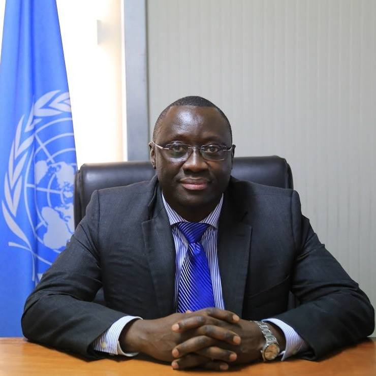

Dr. Musa Yerro Gassama
Director of the Human Rights Division, UNMISS & Representative of OHCHR
Over three decades of experience in international human rights law, peacekeeping, diplomacy, and public policy, with senior leadership roles across Africa and within the United Nations system.
Email: gassama@un.org
Key Achievements
Professional Experience
Representative of High Commissioner for Human Rights and Director (D2)
As a civilian and director of a team of more than 100 experts, providing relevant data for early warning on emerging conditions and strategic guidance, advisory, and technical services to national and international stakeholders for early response through prevention and protection of civilians at risk in peacekeeping setting.
As Representative, establishing and maintaining engagement and dialogue with wide range of stakeholders on peace and security, sustainable development and human rights/rule of law issues.
Representative of OHCHR and Chief of Human Rights (D1) Section
Director of a team of more than 100 experts, providing relevant data for early warning on emerging conditions and strategic guidance, advisory, and technical services to national and international stakeholders for early response through prevention and protection of civilians at risk.
Established and maintained engagement and dialogue with wide range of stakeholders on peace and security, sustainable development and human rights/rule of law issues.
Representative of OHCHR & Chief of Human Rights (D1) Section
Director of a team of more than 35 experts, providing relevant data for early warning on emerging conditions and strategic guidance, advisory, and technical services to national and international stakeholders for early response through prevention and protection of civilians at risk.
Established and maintained engagement and dialogue with wide range of stakeholders on peace and security, sustainable development and human rights/rule of law as part of a UN political field mission based in Mogadishu.
OHCHR Regional Representative for East Africa and to the African Union Commission
Director of a team of more than 35 experts, providing relevant data for early warning on emerging conditions and strategic guidance, advisory, and technical services to national and international stakeholders.
Established and maintained engagement and dialogue with wide range of stakeholders, advancing strategic AU-UN cooperation on development, humanitarian, governance, as well as on peace and security issues through provision of strategic guidance, facilitation, technical capacity support, and advisory services.
Representative of OHCHR (P5)
Maintained contact with the government and a wide range of actors providing relevant data for early warning on emerging conditions and strategic guidance, advisory, and technical services to national and international stakeholders for early response through prevention and protection of civilians or vulnerable groups.
Deputy Director
Organisational management; Promotion and protection of rights of those defending human rights by engaging national and international stakeholders; advocacy, technical assistance and capacity development on favor of human rights defenders.
Regional Project Coordinator
Promotion and protection of rights of those defending human rights by engaging national and international stakeholders; advocacy, technical assistance and capacity development on favor of human rights defenders.
Regional Project Coordinator
Promotion and protection of rights of those defending human rights by engaging national and international stakeholders; advocacy, technical assistance and capacity development on favor of human rights defenders.
Editor and Head of National Council for Law Reporting Offices
Reviewed judgments delivered by various categories of the courts, selecting relevant decisions as judicial precedents and compiling them as law reports for the use of legal practitioners, magistrates, judges, lawyers, and other interested stakeholders outside the courts.
Law Lecturer (Part-time)
Teaching criminal law and procedure at diploma level.
Magistrate
Administration of justice, justice delivery, hearing and determination of cases in court/adjudication.
Career Journey Map
Explore Dr. Gassama's professional journey across 9 countries over 31+ years. Hover over markers to see role details, dates, and organizations.
Leadership & Team Management
For more than 17 years, has led and supervised teams of over 100 human rights, legal, and analytical experts in complex and high-risk environments, providing strategic leadership for human rights monitoring, reporting, early warning, and prevention. Leadership approach emphasizes:
- Strategic planning and vision setting for large-scale human rights programs
- Building cohesive teams across cultural and disciplinary boundaries
- Mentoring and developing junior and mid-level professionals
- Managing complex stakeholder relationships at multiple levels
- Ensuring program delivery in challenging operational environments
Team Composition Experience:
- Multidisciplinary teams including human rights officers, legal advisers, and analysts
- International and national staff across multiple locations
- Teams ranging from 35 to 100+ professionals
Research & Publications
Academic Research
United Nations Human Rights Reports
Teaching, Training & Public Communication
Teaching, training, and public communication activities are informed by long-standing professional experience in senior human rights leadership roles, allowing doctrinal instruction to be grounded in operational realities, mandate constraints, and real-world decision-making within the United Nations system.
- Teaching Experience: Teaching experience in law and related subjects, including criminal procedure and land law, at secondary and technical institutions
- UN Human Rights Training: Long-standing trainer on the United Nations human rights system for professionals since 2000, drawing directly on field leadership experience in peacekeeping and political missions
- Lectures & Instruction: Delivery of lectures and professional instruction to academic and practitioner audiences at various levels, linking international human rights law and international humanitarian law to operational practice
- High-Level Representation: Representation of the United Nations in high-level conferences and policy-making forums in Geneva and New York, delivering formal statements and expert briefings on complex and sensitive human rights issues
- Public Communication: Public communication on human rights violations, accountability, and protection risks before government officials, diplomats, and international stakeholders, based on evidence-driven reporting and mandate responsibilities
Languages
Fluent
Fluent
Academic Background
- Bachelor of Laws (LLB), University of Sierra Leone
- Barrister-at-Law, Sierra Leone Law School
- Master's degree in Public Policy and Administration, Walden University
- PhD in Public Policy and Administration, Walden University
References
Available upon request. Senior United Nations and international human rights officials, including:
- Volker Türk, United Nations High Commissioner for Human Rights
- Ilze Brands Kehris, Assistant Secretary-General for Human Rights, Office of the United Nations High Commissioner for Human Rights
- Jean-Pierre Lacroix, Under-Secretary-General for Peace Operations
- Martha Ama Akyaa Pobee, Assistant Secretary-General for Africa
- Nicholas Haysom, Special Representative of the Secretary-General, United Nations Mission in South Sudan
- Parfait Onanga-Anyanga, Special Representative of the Secretary-General and Head of the United Nations Office to the African Union
- Cong Guang, United Nations Special Envoy to the Horn of Africa